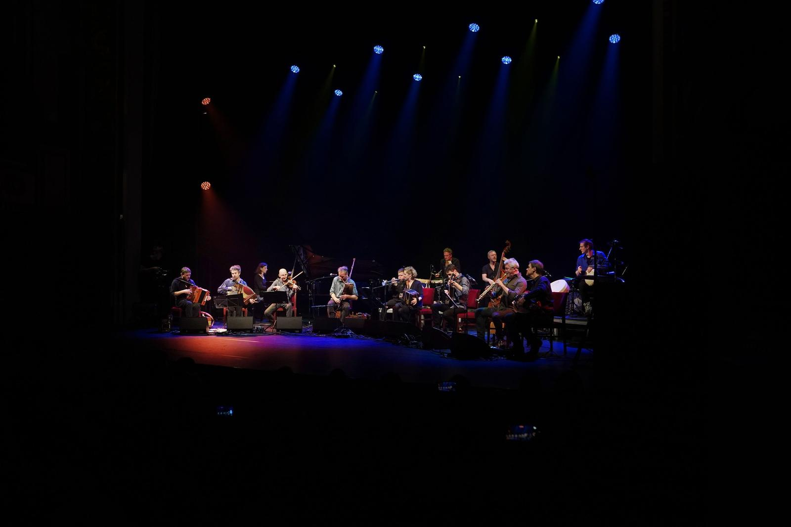

← Homepage
Voor programmatoren
Producties
Concerten en programma’s die Merodefestival mee maakt en op tournee stuurt. Elke productie kan geboekt worden door cultuurcentra, festivals en organisatoren van bijzondere locaties.
Podiumproducties
Concerten en voorstellingen voor cultuurcentra, festivals en bijzondere locaties.
-
 Nieuw album en tournee, seizoen 2027–2028
Rhagium Inquisitor
Andries Boone, live in kwartet- of sextetbezetting
Op zijn vierde soloalbum versmelt Andries Boone akoestische en elektronische werelden. Viool, octaafviool, mandoline, nyckelharpa en barokmusette ontmoeten synths en sequencers, geïnspireerd door Scandinavische en Bretonse volksmuziek, de jachthoorntraditie én de elektronica van de jaren tachtig en negentig.
Bekijk de productie →
Nieuw album en tournee, seizoen 2027–2028
Rhagium Inquisitor
Andries Boone, live in kwartet- of sextetbezetting
Op zijn vierde soloalbum versmelt Andries Boone akoestische en elektronische werelden. Viool, octaafviool, mandoline, nyckelharpa en barokmusette ontmoeten synths en sequencers, geïnspireerd door Scandinavische en Bretonse volksmuziek, de jachthoorntraditie én de elektronica van de jaren tachtig en negentig.
Bekijk de productie →
-
 Kerstprogramma 2027, 2028
O Kerstnacht
Eléonor & ensemble, met Philippe Laloy, Vincent Noiret en Maarten Decombel
Middeleeuwse kerstliederen in een nieuw licht. Eléonor graaft vergeten kerstliederen uit de Lage Landen op, hertaald naar eigentijds Nederlands, op het kruispunt van oude muziek, jazz en folk: een warme, kunstige kerstavond waarin verleden en heden elkaar vinden.
Bekijk de productie →
Kerstprogramma 2027, 2028
O Kerstnacht
Eléonor & ensemble, met Philippe Laloy, Vincent Noiret en Maarten Decombel
Middeleeuwse kerstliederen in een nieuw licht. Eléonor graaft vergeten kerstliederen uit de Lage Landen op, hertaald naar eigentijds Nederlands, op het kruispunt van oude muziek, jazz en folk: een warme, kunstige kerstavond waarin verleden en heden elkaar vinden.
Bekijk de productie →
-

Nieuw album en tournee, 2027–2029 Naragonia & The Ship of Fools Naragonia, met blazers en ritmesectie Wie zit er vandaag op het narrenschip? Na hun uitverkochte jubileumconcert groeide Naragonia uit tot een negenkoppig schip met blazers en ritmesectie. Een avond tussen ingetogen liederen over ontheemding en muziek vol veerkracht en dans. Bekijk de productie →
Interesse in een productie of een programma op maat? Mail info@merodefestival.be.